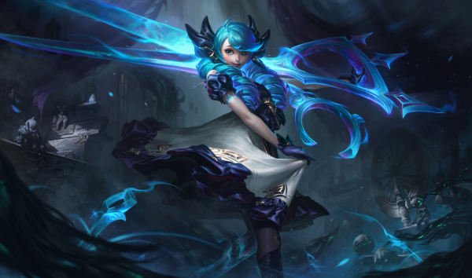

Os Ataques de Gwen causam Dano Mágico adicional com base na Vida do alvo. Ela se cura em parte do dano causado a Campeões com esse efeito
Gwen corta uma área em cone até seis vezes com a tesoura, causando Dano Mágico. Ela causa Dano Verdadeiro às unidades atingidas no centro e aplica a Passiva a cada corte.
Gwen invoca uma Névoa que a protege dos inimigos que estiverem do lado de fora. Ela só pode ser alvejada por inimigos que entrarem na área da Névoa.
Gwen avança por uma curta distância e ganha Velocidade de Ataque, Alcance de Ataque e Dano Mágico ao contato por alguns segundos. Se ela atingir um inimigo durante esse período, o Tempo de Recarga da Habilidade será parcialmente restituído
Gwen arremessa uma agulha que causa Dano Mágico e Lentidão, aplicando Mil Retalhos aos Campeões atingidos. A Habilidade pode ser conjurada mais duas vezes, e cada conjuração arremessa agulhas adicionais e causa mais dano. Gwen deve atingir um inimigo a cada conjuração para habilitar a próxima.
